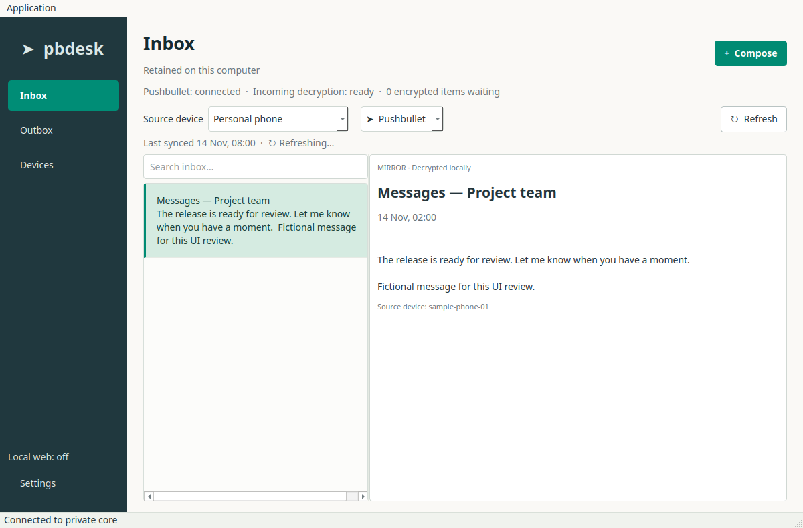
Inbox and selected notification
native · 01-inbox.png
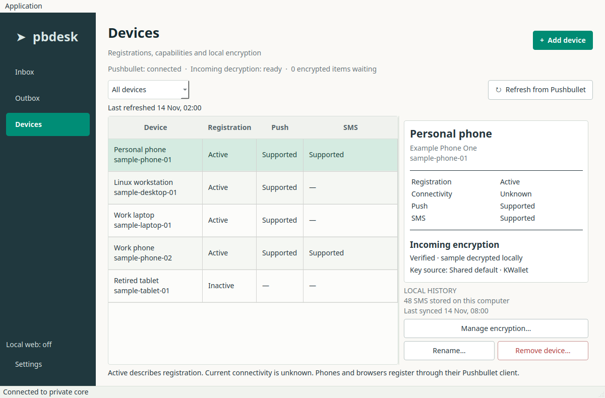
Device list
native · 02-devices.png
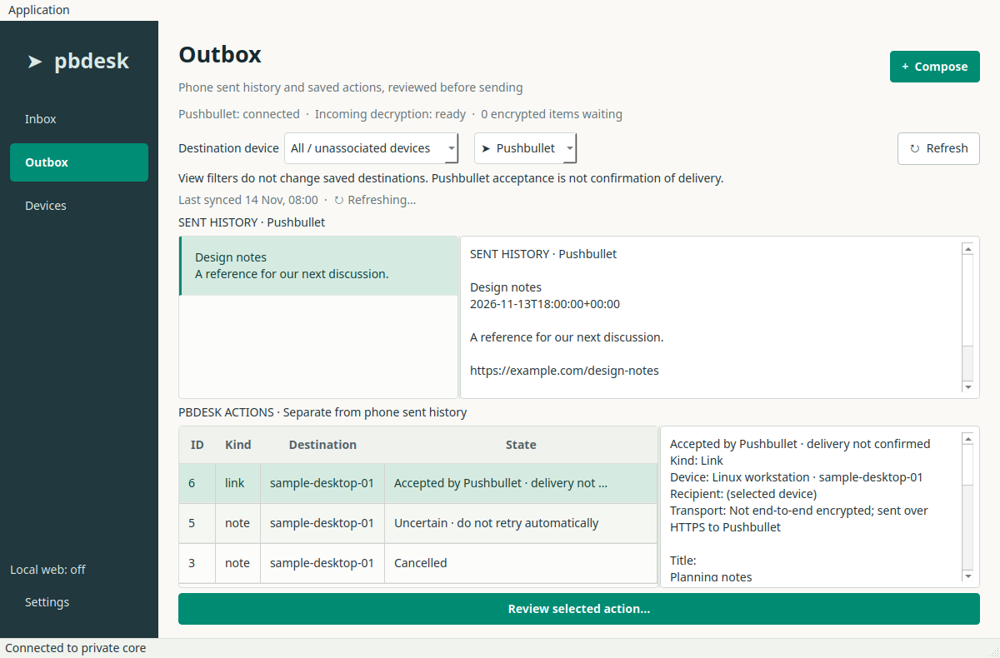
Outbox and action details
native · 03-outbox.png
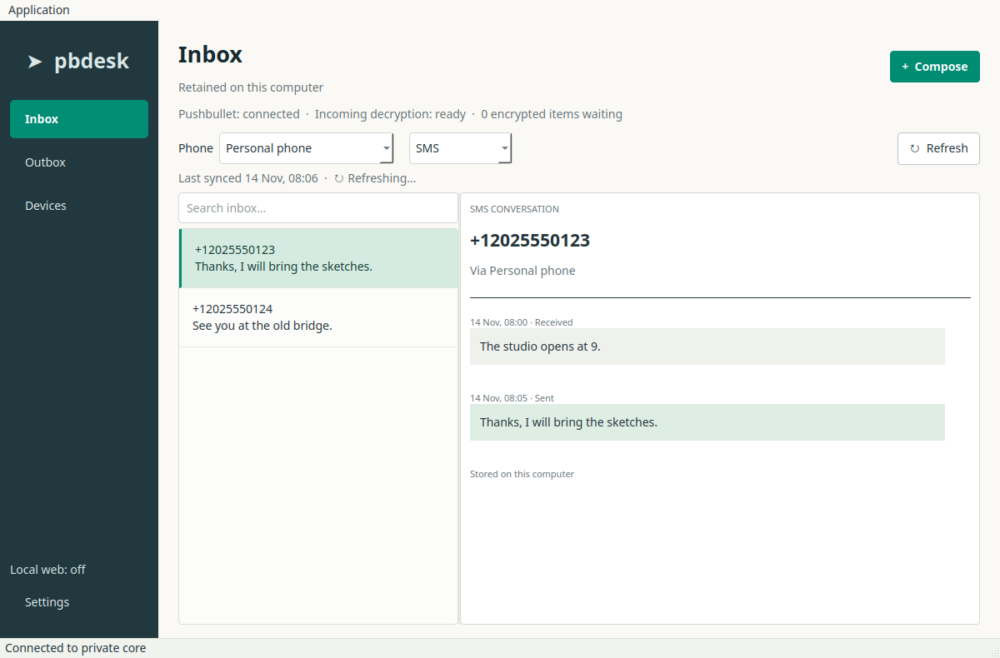
Cached SMS conversation and background sync
native · 19-inbox-sms.png
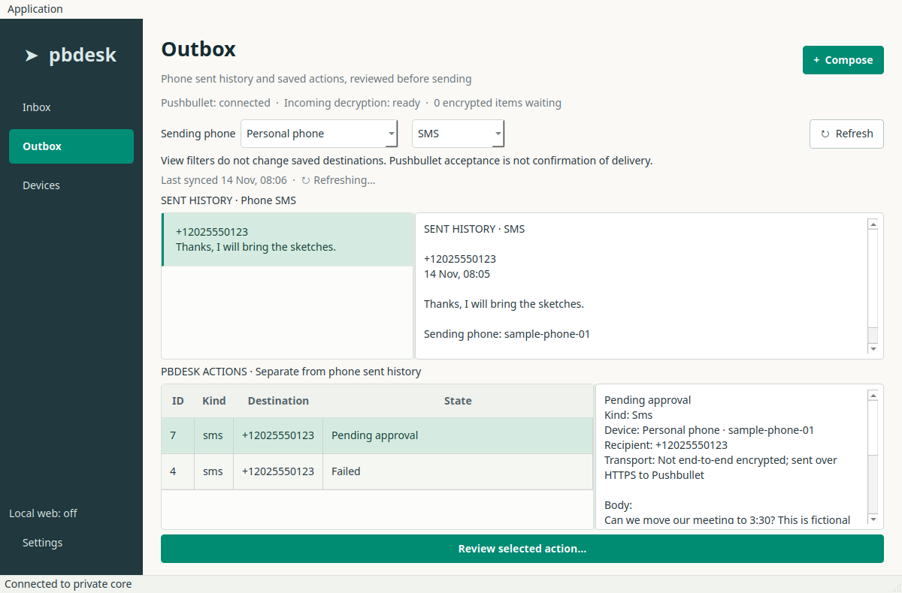
Phone sent history separate from pending actions
native · 20-outbox-sms.png
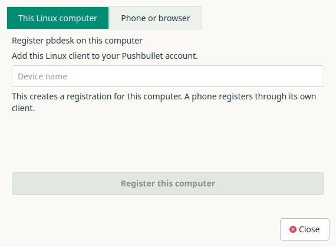
Register this Linux client
native · 21-register-linux.png
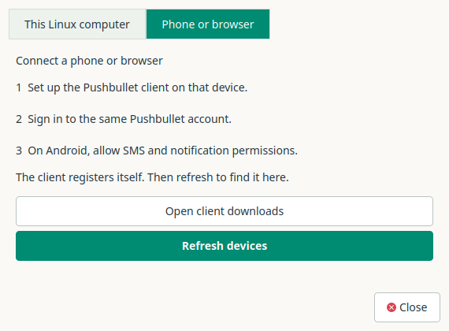
Phone or browser setup guide
native · 22-phone-browser-setup.png
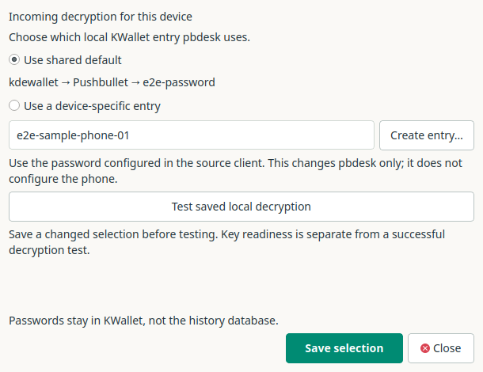
Local per-device KWallet reference
native · 23-local-encryption.png
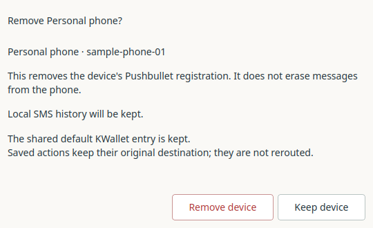
Exact registration removal and retained history
native · 24-remove-device.png
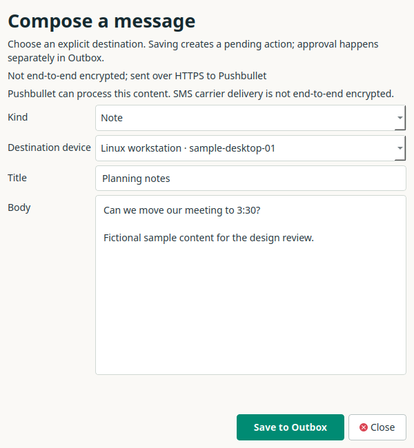
Compose Note
native · 04-compose-note.png
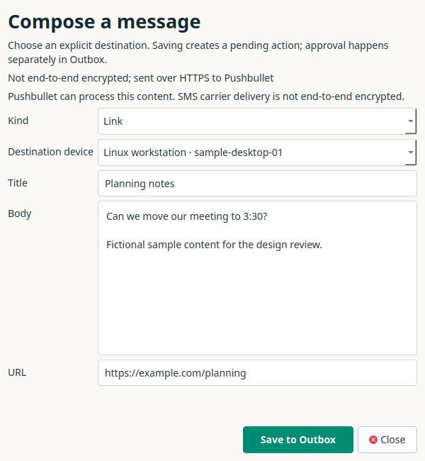
Compose Link
native · 05-compose-link.png
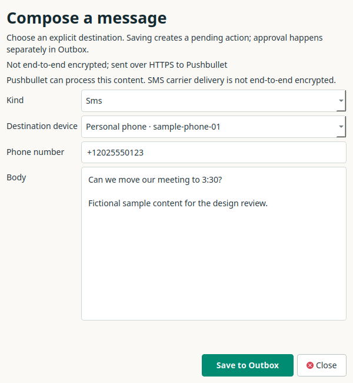
Compose Sms
native · 06-compose-sms.png
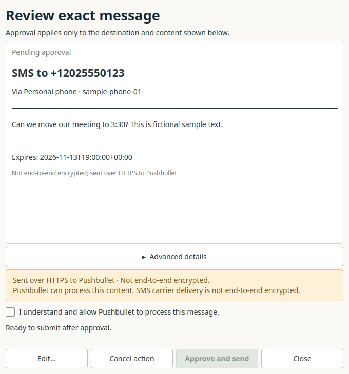
Review and approve an exact message
native · 07-review-approval.png
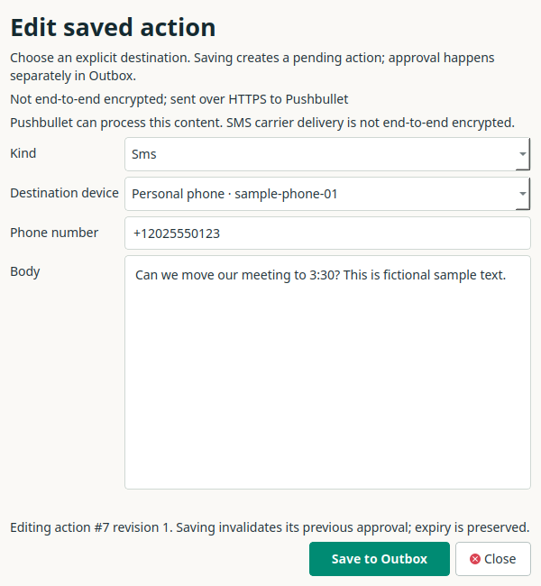
Edit an action
native · 08-edit-action.png
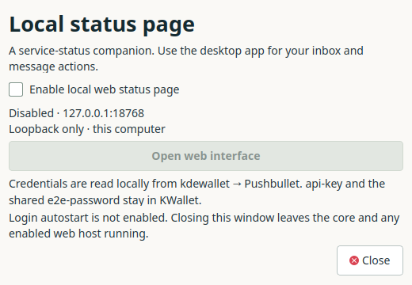
Web hosting settings — disabled
native · 09-web-settings-disabled.png
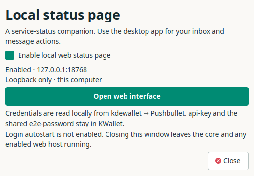
Web hosting settings — enabled
native · 10-web-settings-enabled.png
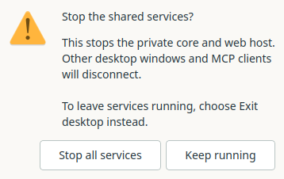
Stop all services confirmation
native · 11-stop-all-confirmation.png
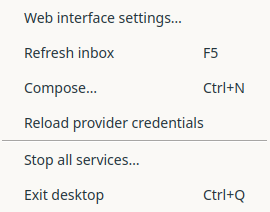
Application menu
native · 12-application-menu.png
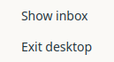
Tray menu
native · 13-tray-menu.png
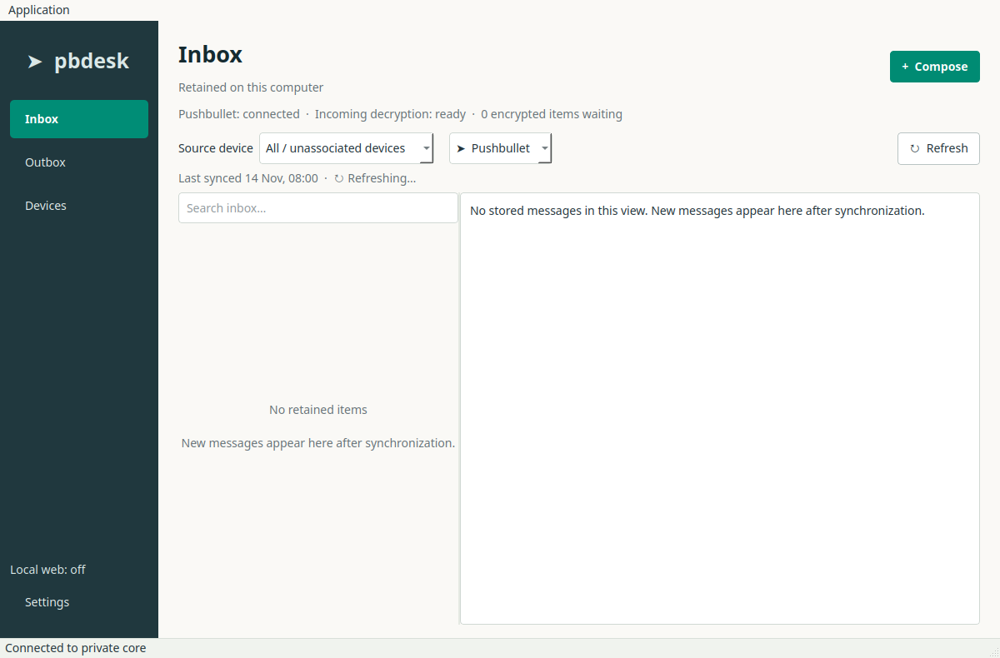
Empty inbox
native · 14-inbox-empty.png
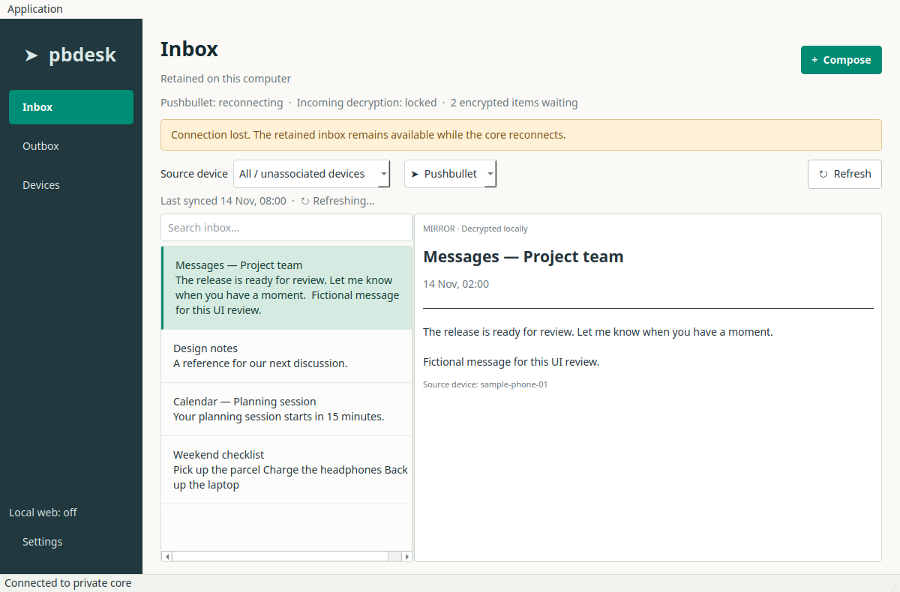
Connection and locked-encryption state
native · 15-connection-error.png
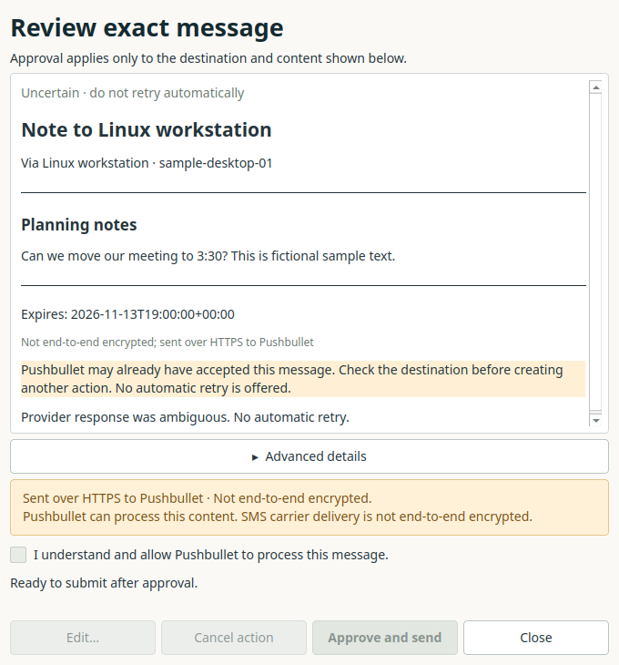
Review an uncertain send
native · 16-review-uncertain.png
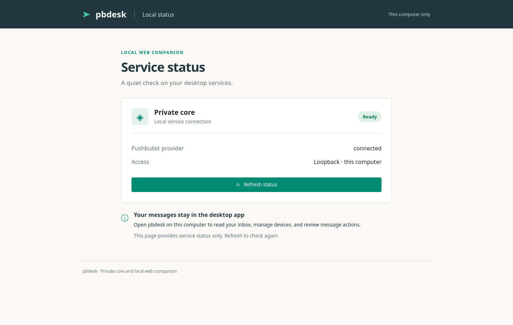
Web status — desktop
web · 17-web-status-desktop.png
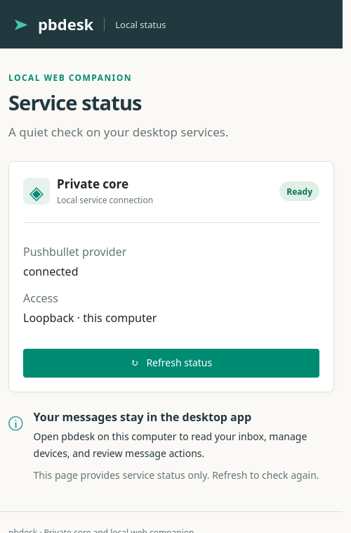
Web status — mobile
web · 18-web-status-mobile.png